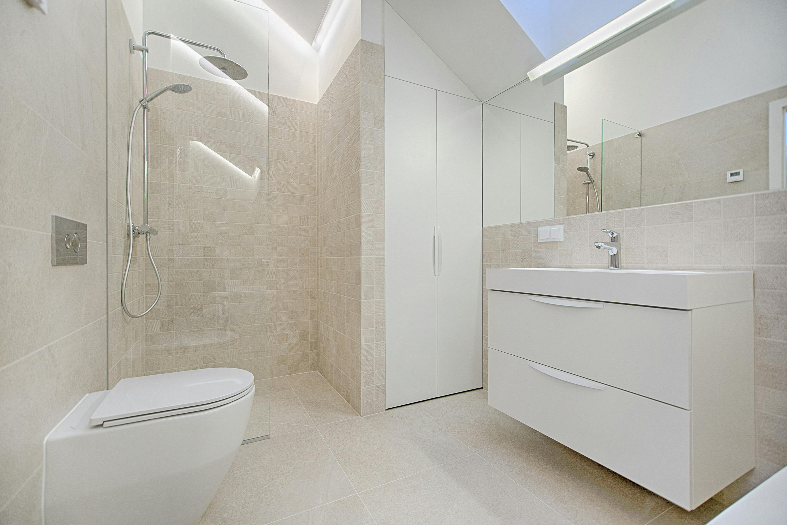
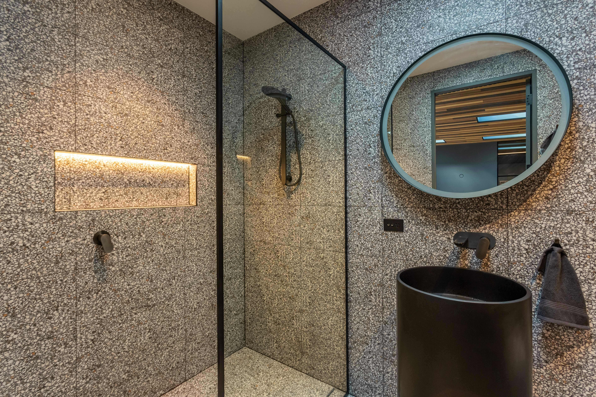
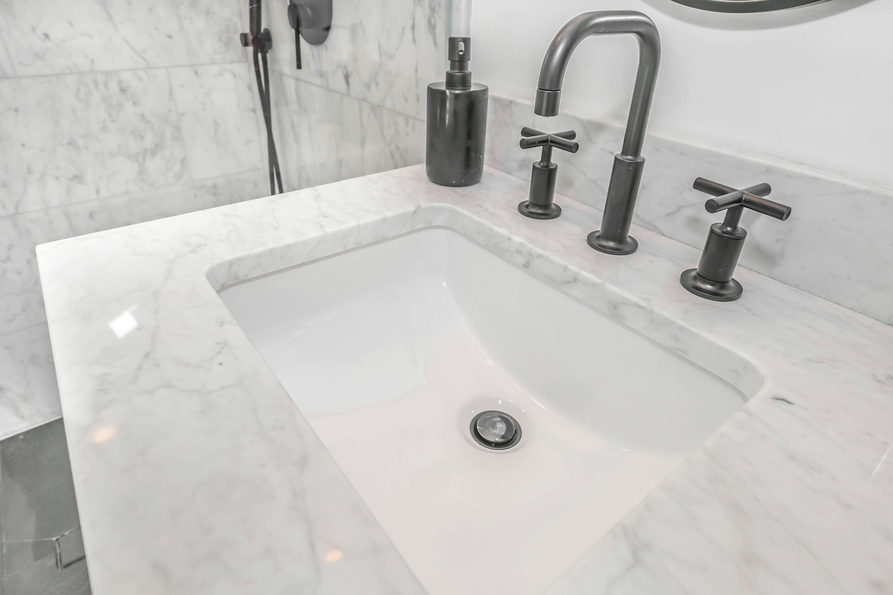

Alltag
Reparaturen bleiben erreichbar, ruhig und lösungsorientiert.
Für Wohnungen, Häuser und ausgewählte Gewerbeprojekte in Berlin: saubere Sanitärinstallationen, alltagsnahe Reparaturen und hochwertige Badmodernisierung – klar strukturiert, verständlich betreut und professionell umgesetzt.


Genau darin liegt die Leitidee dieser Konzeptseite: praktische Anliegen werden verständlich gelöst, größere Projekte sauber geführt und Badmodernisierung als hochwertige, alltagstaugliche Aufwertung positioniert.
Reparaturen bleiben erreichbar, ruhig und lösungsorientiert.
Installationen und Modernisierung werden klar strukturiert geführt.
Vertrauen entsteht über Ausführung, Materialität und saubere Kommunikation.
Die Seite priorisiert Badmodernisierung, Sanitärinstallationen, Reparaturen und Hilfe bei dringenden Problemen direkt zu Beginn. Kompakt, hochwertig und ohne visuelle Unruhe.
Hochwertige Modernisierung von Bädern mit Fokus auf Funktion, Gestaltung und sauberer Umsetzung im Bestand.
Anschlüsse, Leitungen und neue Sanitärlösungen für Bad, Küche und weitere Nutzungsbereiche – verständlich geplant und fachgerecht ausgeführt.
Praktische Reparaturen, Instandhaltung und laufender Service für alltagsnahe Sanitärthemen.
Zurückhaltend kommunizierte Unterstützung bei akuten Sanitäranliegen – seriös, erreichbar und lösungsorientiert.
Die stärkste Premium-Zone nach dem Hero erzählt Badmodernisierung als funktionale, ruhige Aufwertung: bessere Abläufe, klarere Nutzung, sauber gesetzte Details und ein Ergebnis, das im Berliner Wohnkontext glaubwürdig hochwertig wirkt.




Gerade bei kleineren Sanitärthemen entsteht Vertrauen durch Erreichbarkeit, Klarheit und einen ruhigen Serviceeindruck. Die Seite übersetzt Reparaturservice deshalb in eine sachliche, professionelle Alltagskompetenz.
Diese Sektion fasst die Versprechen der Seite sichtbar zusammen: Vertrauen, schnelle Orientierung, mobile Nutzbarkeit und direkte Kontaktwege ohne Umwege.
Ruhige Bildführung, klare Typografie und glaubwürdige Leistungsordnung.
Vier Hauptthemen werden früh gezeigt und später gezielt vertieft.
Kurze Wege, hohe Lesbarkeit und klare Kontaktführung auf kleinen Screens.
Sticky-Kontakt, Abschlussformular und klare CTAs statt aggressiver Widgets.
Sehr kurze Schritte halten den Ablauf verständlich und schaffen sofort Vertrauen.
Projekt oder Problem kurz einordnen.
Bestand, Nutzung und Aufwand sauber einschätzen.
Arbeiten klar koordiniert und nachvollziehbar ausführen.
Ergebnis erklären und nächste Schritte klar halten.
Statt vieler kleiner Referenzen zeigt dieser Bereich einen hochwertigen, transparent formulierten Konzept-Case für eine Berliner Badmodernisierung im Bestand.
Ein in die Jahre gekommenes Bad mit begrenzter Fläche, uneinheitlicher Wirkung und wenig Komfort im täglichen Gebrauch.
Neu geordnete Dusche, klarer Waschplatz, reduzierte Armaturenwahl und eine hellere Materialität für mehr Ruhe.
Ein Bad, das hochwertiger wirkt, leichter nutzbar ist und den Wohnwert spürbar anhebt, ohne inszeniert zu wirken.
Ja, die Seite ist klar auf Berlin ausgerichtet und spricht typische Wohnlagen sowie ausgewählte gewerbliche Einheiten in der Stadt präzise an.
Ja, Badmodernisierung ist bewusst als hochwertiges Kernthema geführt und verbindet Funktion, Planung und Wohnqualität.
Ja, Reparaturen und alltagsnahe Sanitärthemen sind ein zentraler Teil der Positionierung und werden ruhig, serviceorientiert und glaubwürdig kommuniziert.
Nein, der Schwerpunkt liegt auf Wohnungen und Häusern, ergänzt um ausgewählte Gewerbeeinheiten, damit die Positionierung fokussiert und nachvollziehbar bleibt.
Ja, akute Sanitärthemen werden erreichbar und lösungsorientiert eingeordnet, ohne die Seite in eine laute Notdienst-Optik zu kippen.
Diese Portfolio-Konzeptseite verbindet marktgerechte Sanitärlogik mit ruhiger Premium-Gestaltung: wohnnah, serviceorientiert, visuell hochwertig und bewusst als Showcase innerhalb der Agentur-Website formuliert.